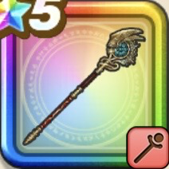

とこしえの杖
攻略班 9.5点 / メダパニ天才魔法使いのイオナズンメラガイアー大まどうしこうりんいきなり魔力かくせい賢者の資質覚醒する天才リンクするちから
くわしい特徴
【レベル別習得スキル】 Lv1【大魔道士】こうげき魔力+5 Lv1スキルの暴走ダメージ+10% Lv5メダパニ（消費MP：12）敵1体を混乱させる Lv20天才魔法使いのイオナズン（消費MP：59）敵全体にイオ属性呪文特大ダメージを与えHP15%以下の敵を消し去る(一部をのぞく) Lv30メラガイアー（消費MP：78）敵1体にメラ属性の呪文絶大ダメージを与える(この呪文を受ける時のみ対象はメラ耐性を強制的に大きく減らされた状態でダメージを受ける) Lv32虫系へのダメージ+5% Lv35悪魔系へのダメージ+5% Lv40さいだいMP+12 Lv45こうげき魔力+12 Lv50大まどうしこうりん（消費MP：最大MPの30%）味方の戦闘中のレベルを2～5(自身は最大10)上げ自身に限界突破を付与し、呪文威力を3段階上げメラガイアーが強化。さらに作戦に応じて行動 Lv50いきなり魔力かくせい（消費MP：25）戦闘開始時に身体中の魔力を覚醒させ、自分の攻撃呪文の威力をかなり上げる Lv50賢者の資質（消費MP：12）戦闘開始時にやまびこやフォースブレイク等のスキル使用時に発動する一部の職業固有特性の発動率を上げる(効果3ターン) Lv50覚醒する天才（消費MP：20）戦闘中自身が魔力の暴走を1回発生させると味方1人をまれにゾーン状態にする Lv50リンクするちから（消費MP：最大MPの1%）戦闘中自身が魔力の暴走を1回発生させるとたまに仲間全員の戦闘中のレベルを1上げる 【限界突破スキル】 1凸じゅもんダメージ+7% 2凸じゅもんダメージ+7% 3凸じゅもんダメージ+7% 4凸じゅもんダメージ+7%